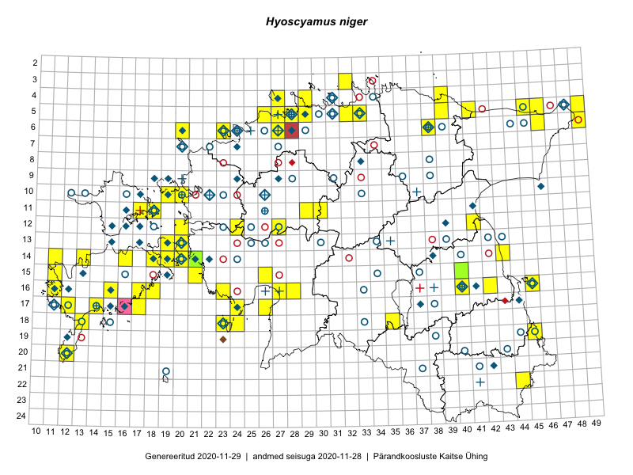

Hyoscyamus niger
Uuendatud: 2016-12-02
Kaardile koondatud taksonid: Hyoscyamus niger L.

Kaart põhineb 44 vaatlusel. Taksonit on leitud 34 ruudust.
Kuvatud viited 20 esimesele andmebaasikirjele, ülejäänud PlutoFis
- Tiit Hallikma, Toomas Kukk: 2015-07-21: 05-45: ala
- Tiit Hallikma, Toomas Kukk: 2015-07-21: 05-45: GPS punkt
- Peedu Saar, Elle Roosaluste: 2015-07-12: 13-20: ala
- Tiit Hallikma, Toomas Kukk: 2015-07-22: 05-49: ala
- Toomas Kukk, Eerik Leibak: 2015-07-29: 16-45: ala
- Ott Luuk, Hannes Pehlak: 2015-07-21: 06-49: ala
- Meeli Mesipuu, Kadri Tali: 2015-07-06: 16-17: ala
- Toomas Kukk, Timo Luhamäe, Kersti Tambets, Sten Mander, Janika Sammasto: 2014-07-29: 19-45: ala
- Peedu Saar: 2015-07-25: 16-42: ala
- Eeva-Maria Jeletsky, Tarmo Niitla: 2015-06-17: 11-17: ala
- Erkki Otsman, Sergei Smirnov: 2015-07-08: 05-27: ala
- Maret Gerz, Leena Gerz: 2015-08-16: 16-23: ala
- Mari Reitalu, Triin Reitalu: 2015-07-22: 17-12: ala
- Mari Reitalu, Oliver Parrest: 2015-05-26: 20-12: ala
- Mari Reitalu, Oliver Parrest: 2015-05-27: 18-13: ala
- Oliver Parrest: 2015-08-15: 20-12: ala
- Toivo Sepp: 2015-08-27: 11-30: ala
- Jaak-Albert Metsoja, Mari Metsoja, Ott Luuk: 2015-06-05: 06-23: ala
- Kaili Orav, Silvia Pihu: 2015-06-19: 05-39: ala
- Kadri Tali: 2015-06-03: 13-19: ala